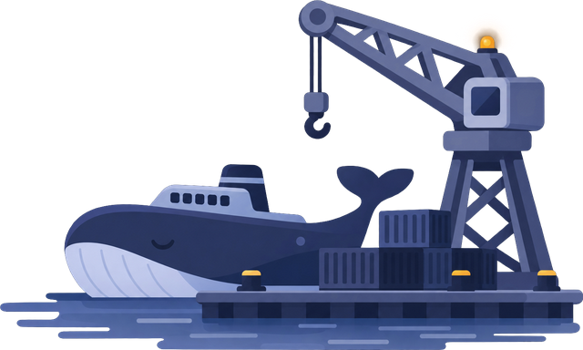

Checking Docker...

Starting
New project
Three short steps. Everything runs in Docker, nothing to install on this computer.
- 1Name
- 2Setup
- 3Create
Edit services
Services
Tick what this project needs. Each database can have its own version.
Database login
Your data stays. The new name and password are used when the project starts (Save and apply). The root password does not change.
Redis
Redis restarts when you apply the change. Its data is a cache, so it is lost on restart.
Options
Extra services
Any image from Docker Hub, with ports, environment variables and a start command.
Removing a service deletes its container, but its saved data stays until the project is deleted. Changing a database version keeps its data; a newer major version can need a backup first.